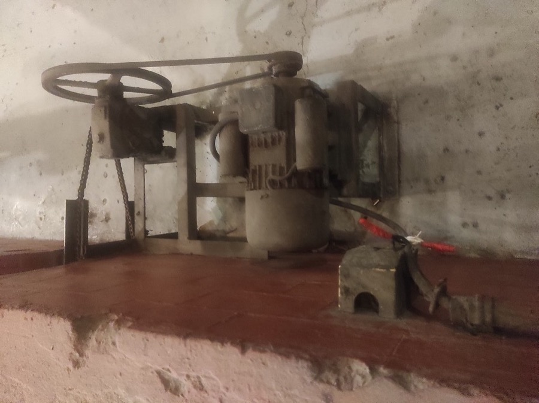

1. Histórico
2. Imagens do ativo

3. Sensores (leitura atual)
4. Dados do ativo (manual do fabricante)
Vibração segundo a ISO 10816-3 (máquina de 15 a 300 kW, base rígida). Valores de exemplo.

Vibração segundo a ISO 10816-3 (máquina de 15 a 300 kW, base rígida). Valores de exemplo.